Overview
Yandex is most popular ecosystem of digital products that helps people to reach their tasks and life goals. When I joined the team, we were preparing the beta release of the entree page, which is part of a major strategy to launch a new Intranet — a unified platform focused on employees' corporate workflows. For the first iteration, the platform will be a mobile app running via webview technology. To support this, each service needed to be migrated to the new design system. This migration also helps address ecosystem mismatches and reduces slow, costly delivery processes.
Goals & Objectives
Migrate key internal workspace services into the design system to simplify and accelerate integration with the mobile app. This helps to:
- Decrease delivery time and development costs through a unified design system
- Enable mobile access via a centralized, webview-based app
- Support rapid testing and iteration with a more flexible design foundation
- Ensure consistency across the ecosystem via a unified UI
Case Study Structure
The following are the essential final screens showcased during the app demonstration, highlighting the key features and user interface elements that define the overall user experience
Tight deadline, but we delivered: smoother rollout, better onboarding, fewer bugs — CSAT up 2%
Rebuilt the contact search scenario, boosting CSAT to 82%
Core UI choices, trade-offs made during the process, and how constraints shaped the final solution.
Outcomes of the redesign — satisfaction improvements, delivery speed gains, and mobile adoption metrics.
Switch up the tech stack
We migrated the old service to the new design system while preserving key changes. I handled UI updates, design, developer support, and improved absence logic, validating it through user research. The old system made tracking absences difficult, often losing details. After research and testing two prototypes, we used feedback to refine the new version.
90 days
time-to-market
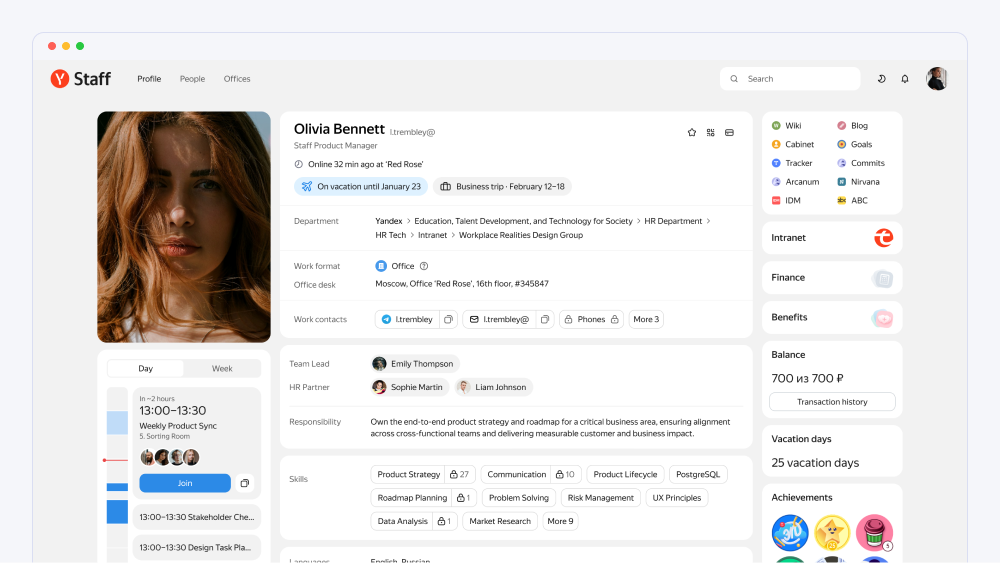
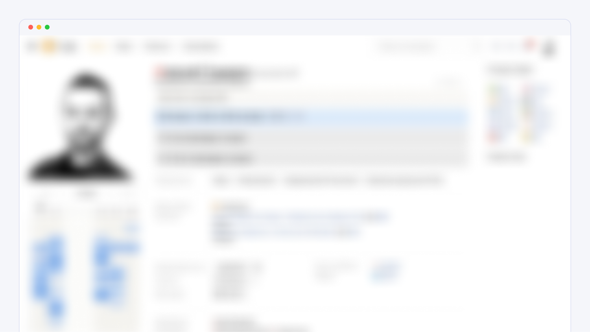
Before AfterThe before version is blurred due to NDA restrictions. The after version is a case study adaptation and does not fully reflect the final product.
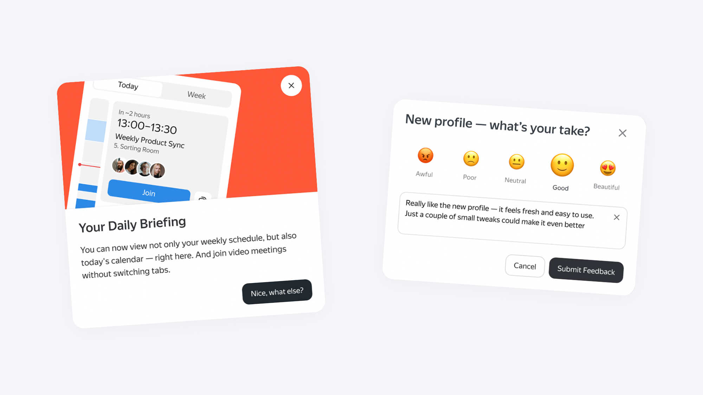
What's New gives admins full control over feature announcements—no developers needed. The request feature helped evaluate success and collect user feedback to improve future interactions.
After launching the CSAT survey, we measured user satisfaction for the first time — the score was 3.71 out of 5. This was low and confirmed that the current experience needed significant improvement.
Small Changes, Real Impact
In the next phase, we focused on the CSAT score and improved one of the most popular scenarios — working with contacts. After analyzing usage data and heatmaps, I restructured the contacts section into two display options — one based on the most popular contacts, and a safer version that kept the existing structure. This led to clear, measurable growth.
82% CSAT
reached after feedback loops and improvements
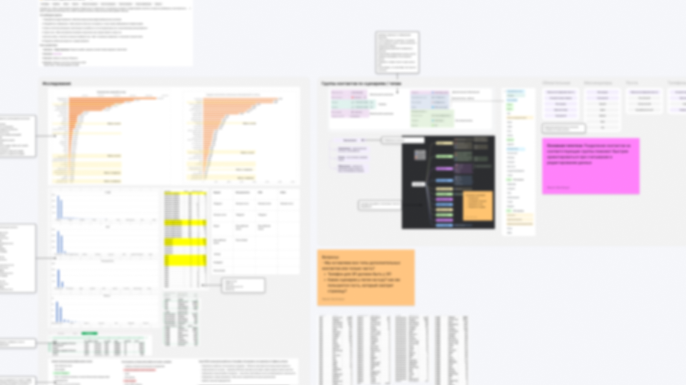
This work required close collaboration with analysts and technical managers, as the product had a lot of legacy that affected every decision.
Contacts couldn't be deleted, so the first step was understanding what we were working with. User analytics helped identify low-usage contacts visually, surface the most-used upfront. Two design directions emerged: fix the technical debt with minimal changes, or rebuild and redesign the block entirely. Both were scoped for mobile. The interaction pattern from this work was later adopted across the ecosystem.
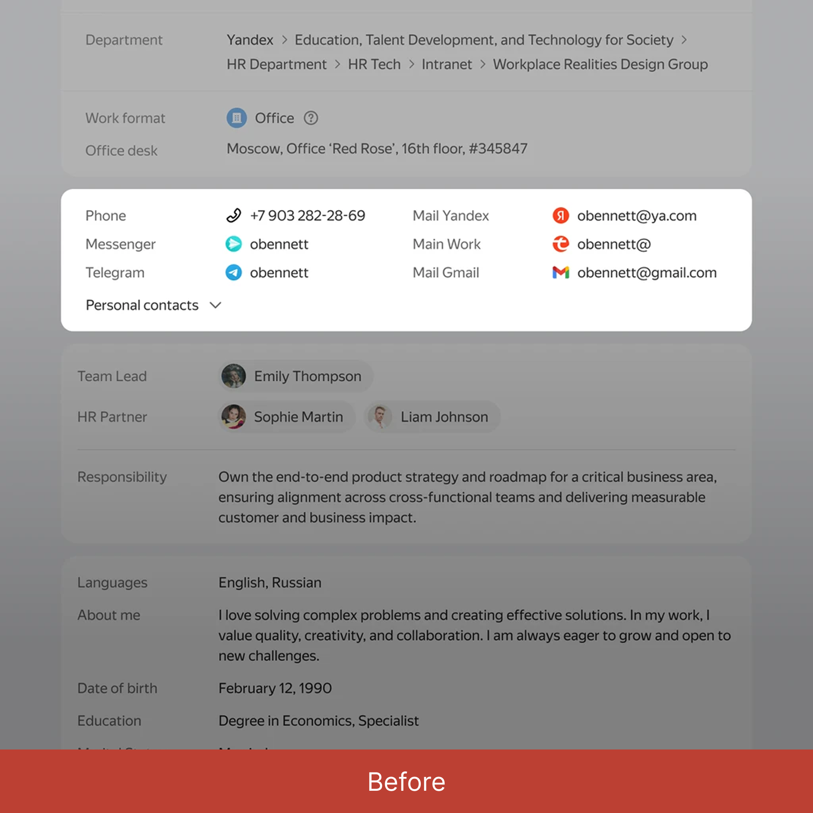
Although the interaction pattern was preserved, respondents didn't see value in the constant display of unpopular and technical contact options—a fact confirmed by analytics
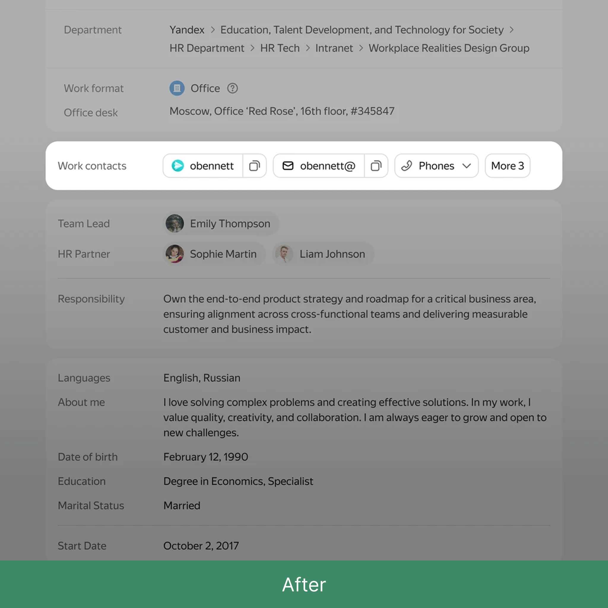
The more compact version, which focused on the most-used contacts, was chosen. It received 60% of the votes.
Contacts couldn't be deleted, so the first step was understanding what we were working with. User analytics helped identify low-usage contacts visually, surface the most-used upfront. Two design directions emerged: fix the technical debt with minimal changes, or rebuild and redesign the block entirely. Both were scoped for mobile. The interaction pattern from this work was later adopted across the ecosystem.
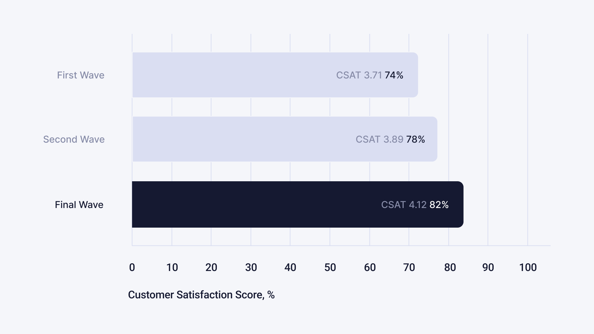
By working together and iterating quickly, we fixed the key issues and hit our 82% CSAT target.
Mobile App Integration
The following are the essential final screens showcased during the app demonstration, highlighting the key features and user interface elements that define the overall user experience
User Interviews, Analytics & Surveys
First, I conducted 8 user interviews to identify and better understand key user scenarios, allowing me to focus the design on their actual needs. Additionally, I gained several insights into underrated features that users still found valuable. As part of the interviews, I asked users about their experience with the current mobile version, the tasks they typically perform, and any unmet needs. I then presented a prototype and asked them to complete key scenarios to assess usability and uncover areas for improvement.
8
Number of participants
30
Mins interview
10
Open-ended questions
Interview Takeaways
- Users want quick access to contact options
- They check availability to find time for meetings
- Often need to locate colleagues in the office
- Value basic info: team, manager, absences
- Old version lacked key scenarios — low engagement
Applying Insights in Design
The product manager aimed to create a "wow effect" in this part of the interface, and based on colleagues’ experience with profile designs, the profile photo was seen as a key opportunity. The team believed that larger photos would improve colleague recognition in the office, add a more personal and approachable touch to profiles. The team was inspired by the idea, and we decided to run an experiment. However, a side-by-side usability test showed no significant difference for users between the classic version and the one with a large photo — scoring 58 versus 60 points. Anyway, both versions were better than the current one.
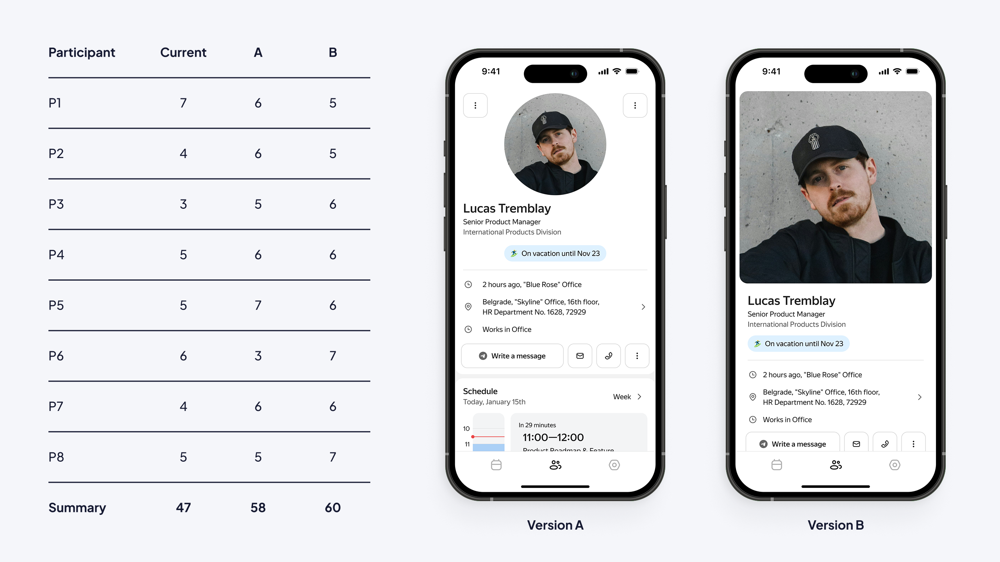
A core feature of the application enables users to search for colleagues, view their availability status, and initiate communication through multiple channels, enhancing workplace connectivity and streamlining collaboration
Essential Screens
The following are the essential final screens showcased during the app demonstration, highlighting the key features and user interface elements that define the overall user experience
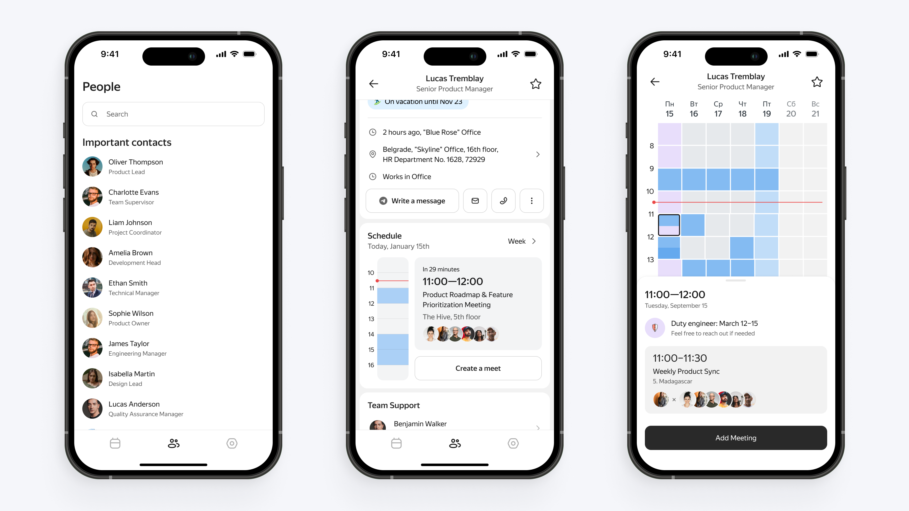
A core feature of the application enables users to search for colleagues, view their availability status, and initiate communication through multiple channels, enhancing workplace connectivity and streamlining collaboration
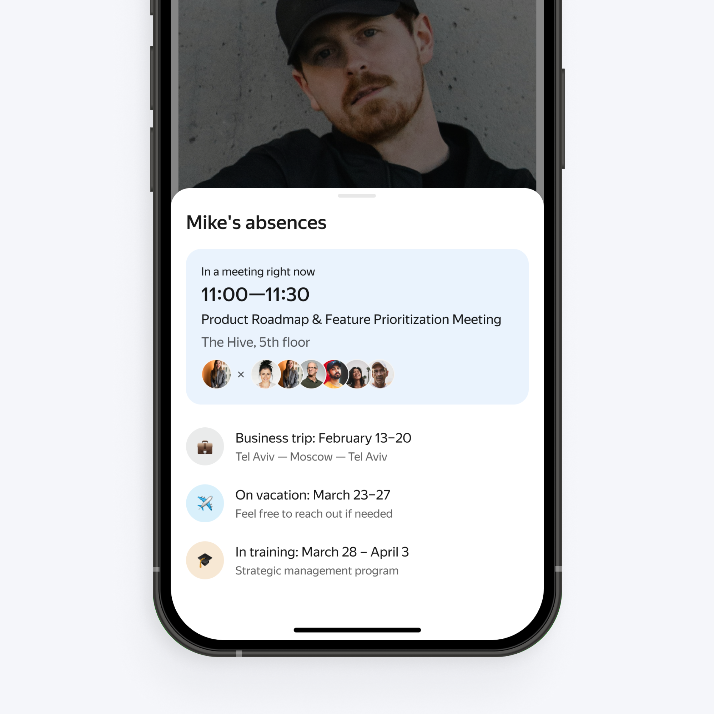
Another key scenario is checking availability and scheduling meetings, simplifying coordination across teams
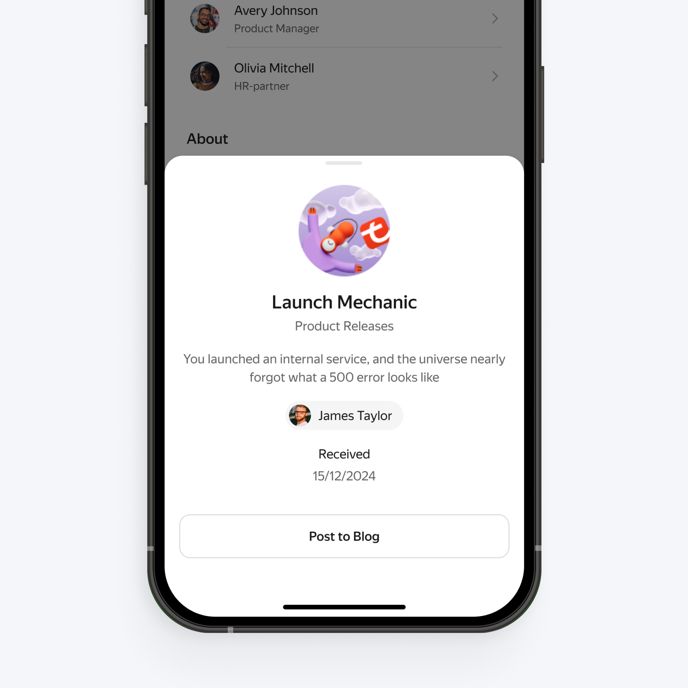
Users can view their earned achievements in a dedicated section, with icons and brief descriptions showcasing their progress and accomplishments
Future Vision
After completing the main redesign of the service, I focused on a series of Discovery tasks aimed at exploring ways to enhance the employee profile. Based on the product manager’s vision, we identified key directions for future development.
Status
To develop the Status feature, I designed two solutions with varying levels of complexity. Through iterative user testing, I found that most users preferred the version with the button placed on the photo, as it minimally impacted the familiar layout of other elements. Based on this clear preference, the team refined and selected this option, which was added to the product backlog.
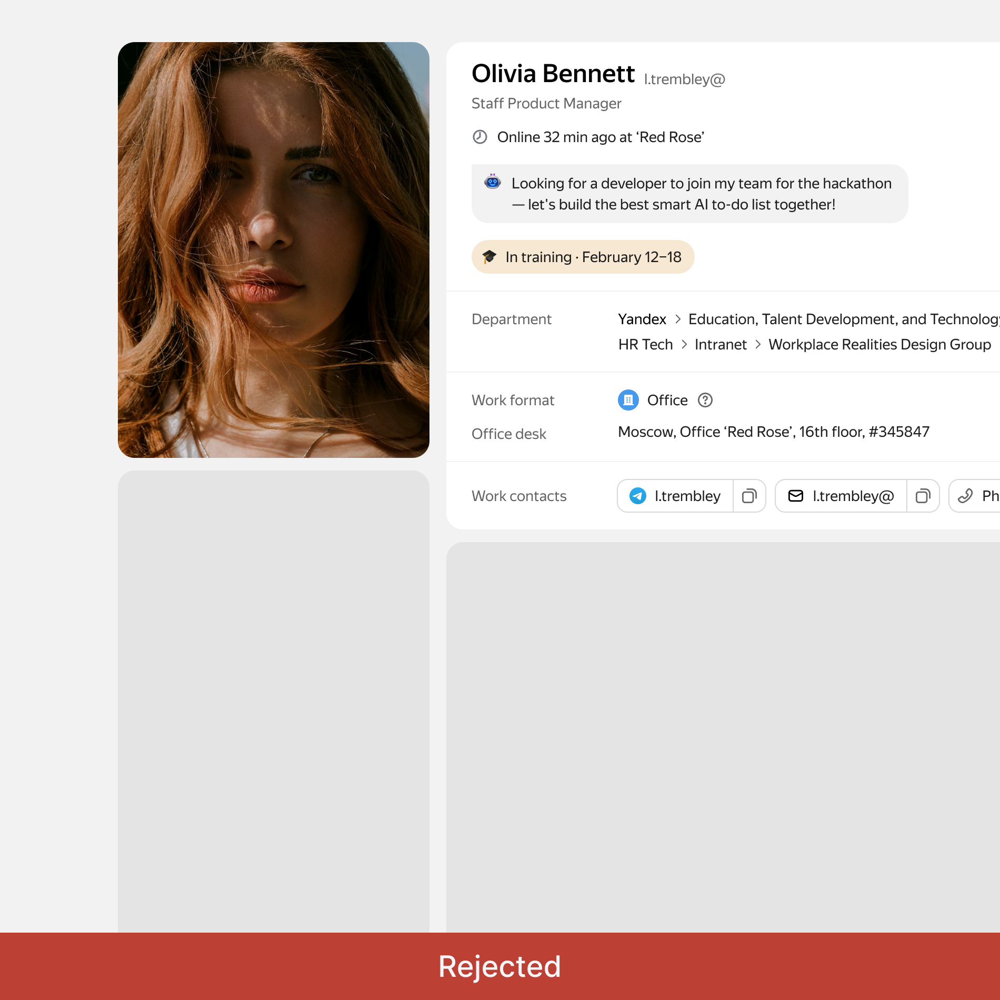
Placing it in the main block was simple to develop, but users found it annoying and distracting, as the section was already overloaded with information
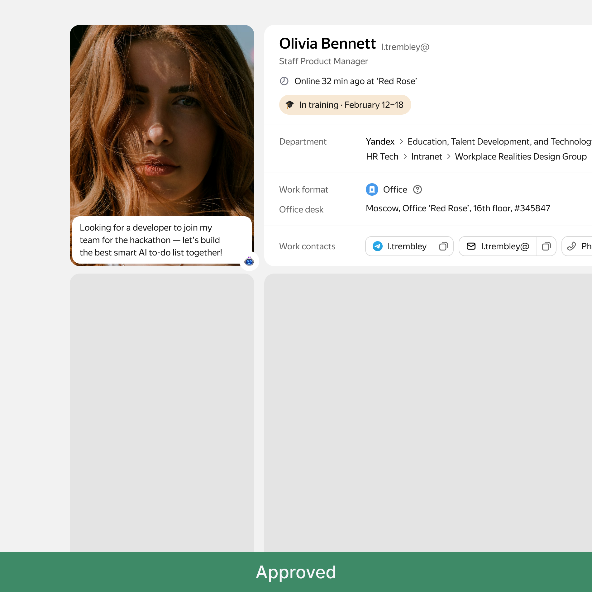
Adding this scenario to the photo area was more engaging and preferred by users, even though it required slightly more development effort
Optimizing layout
The same page contained similar information, which made it difficult to navigate and slowed down development of the service. To solve this, I carefully analyzed all existing content and reorganized it into clear, intuitive sections based on information type and user scenarios. I completely redesigned the layout from scratch with a focus on clarity. As a result, it became easier to find information and space was created for new features—making the interface more user-friendly and ready for future growth.
Yes
Hypothesis confirmed
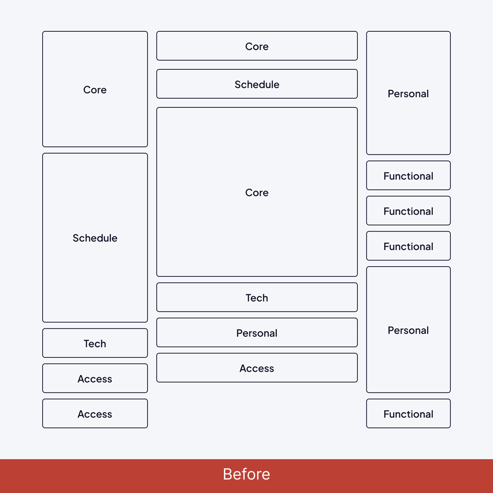
Everything was packed onto one page, which made it hard to use and slowed down development
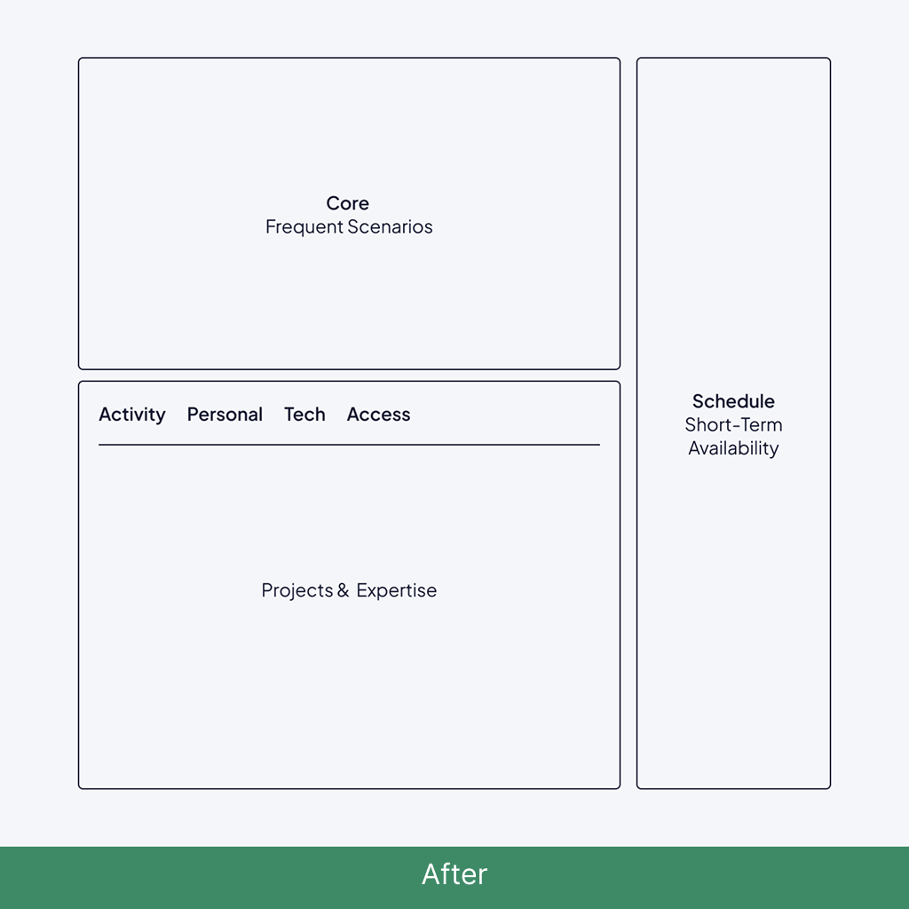
Most-used info stayed visible, while less-used content was placed in tabs. Over 90% of respondents found it easier to find information during prototype testing.
Activity Feed Validation
Based on the product vision to improve understanding of employee roles, I designed an activity log concept and conducted user interviews to validate the hypothesis that it helps clarify what each person does and increases transparency. As a result, I gained insights into the key areas users value most, including the achievements they consider important and want to share.
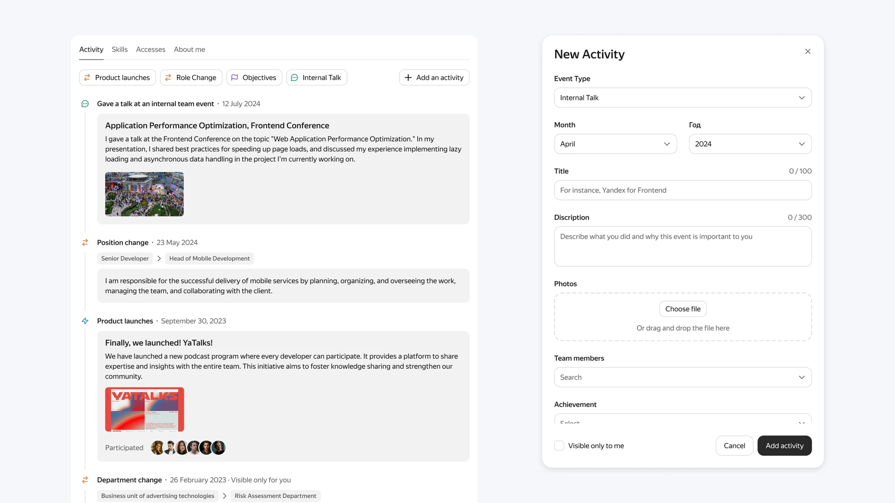
Visualizing the concept helped uncover details and better assess the implementation
Outcomes
It was a long journey of intensive work with the team, but in the end we achieved the results we had planned.
Results Achieved
- Decreased delivery time and development costs through a unified design system
- Enabled mobile access via a centralized, webview-based app
- Supported rapid testing and iteration with a more flexible design foundation
- Ensured consistency across the ecosystem via a unified UI
Learnings
This project showed me that even with tight deadlines, it's possible to deliver impactful results by staying focused and collaborating closely with the team. If I were to start over, I would put more effort into optimizing and unifying components early on to improve consistency and reduce future work.
I also discovered the RITE method for user research, which I continue to use in my practice. I gained hands-on experience with a design system and began relying more on product metrics to support and validate design decisions.